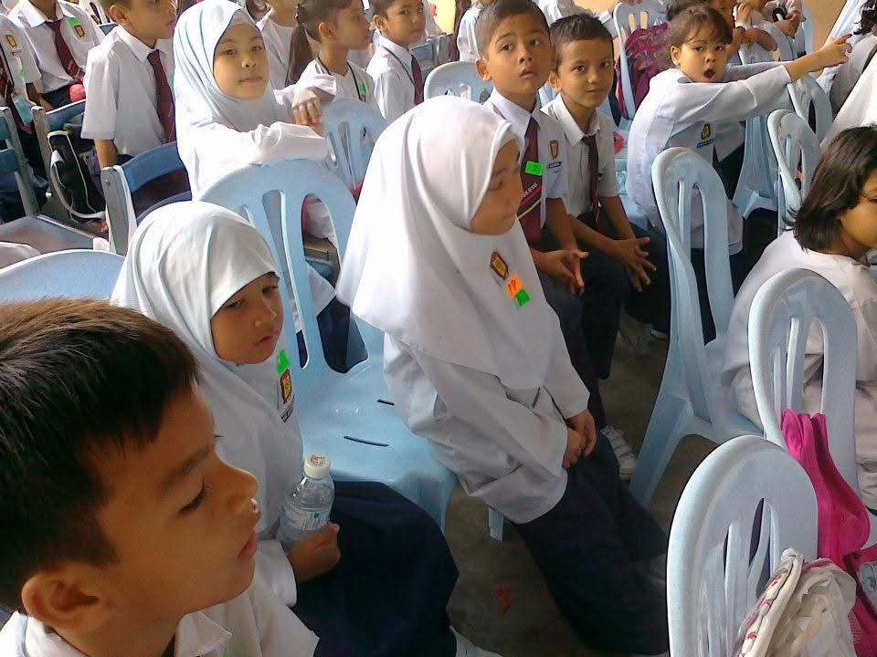
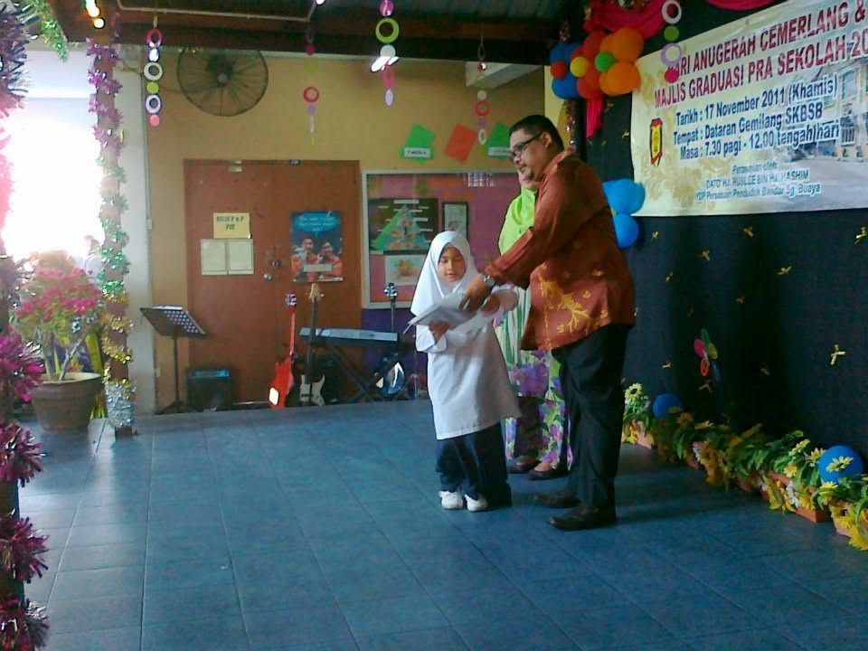
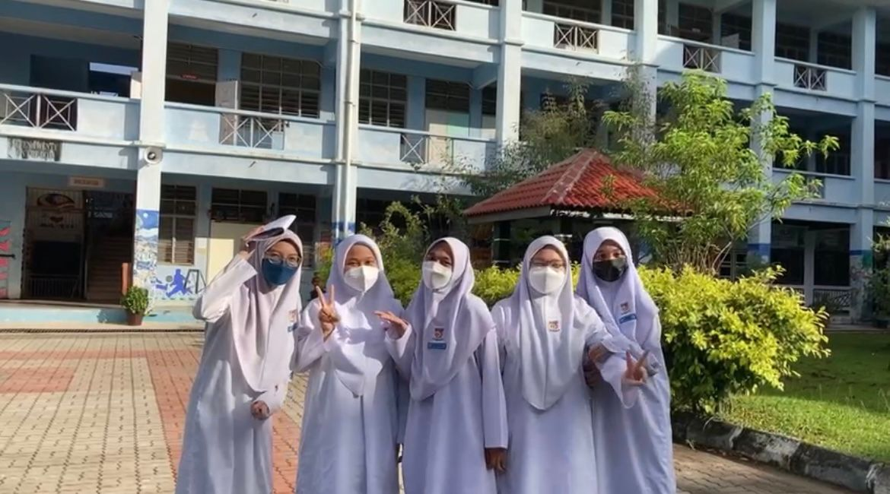
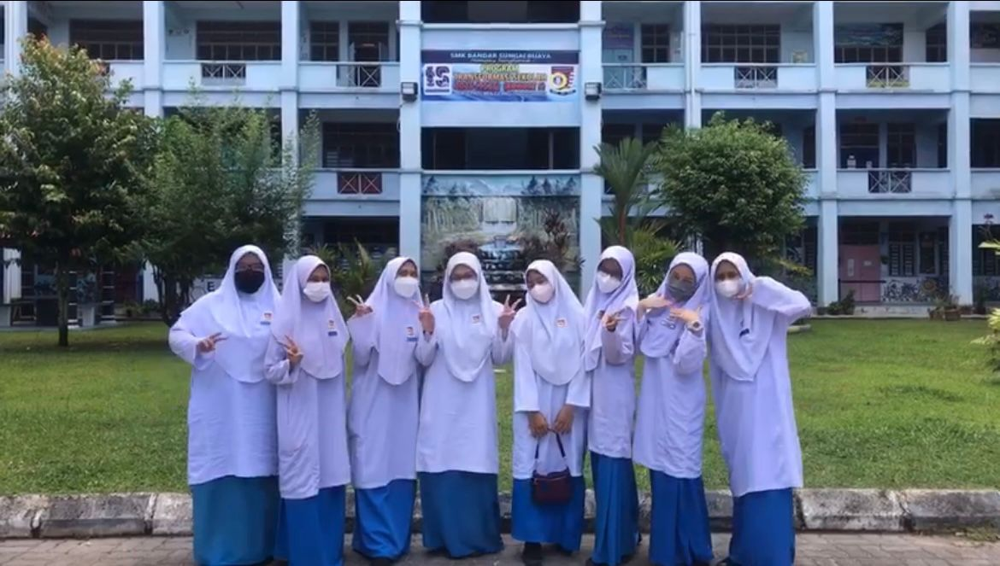
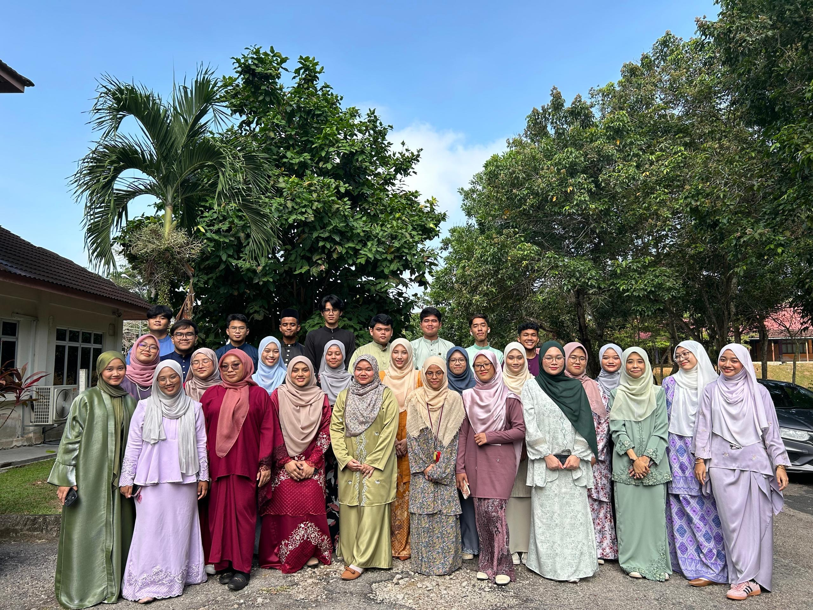
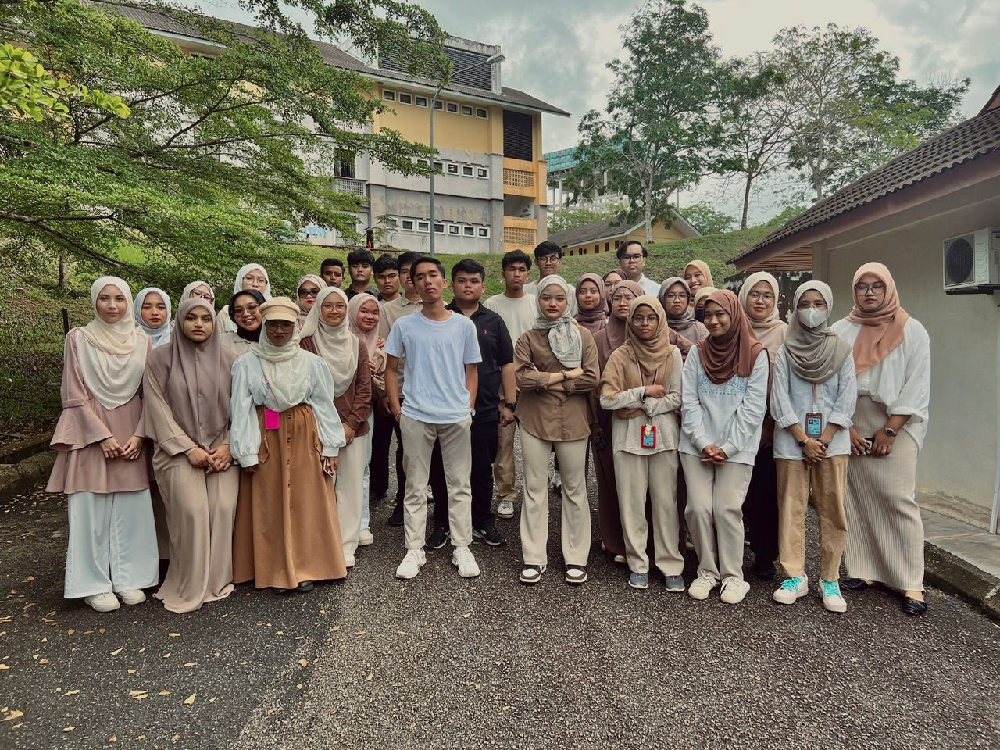

Primary School


My primary school, Sekolah Kebangsaan Bandar Sungai Buaya, was near my
house which is 5 minutes to arrive. Here I learned the basics and developed
a love for learning. Honestly, I did not really excell in academic during my
primary time. I was more focused on curriculum activity such as Puteri Islam
and handball. During my involvement in Puteri Islam, I participate in Donut
making competition. Me and my partner win the first round that lead us to the
next round which is as a representative of the district, Hulu Selangor. We win
second place and successfully made the school proud. Other than that, I also
joined handball as a wall position. I remember how hard me and my team pracice
to participate in the competition amongst all schools in Hulu Selangor. For this
competition, we win and get to participate on the next level which is a
representative of Hulu selangor along with all district schools. I remember
I receive a certificate for Tokoh Wirama in Handball. In academic, i did excell
in some years which allow me to join and got awarded during end-year excellent
award ceremony. I realize that primary school was a crucial part of my foundation
in education that makes me who I am today.
High School


When High School started, I begin to focus more on my academic goals
and tone down my sports and curricular activities. I got better in terms
of grades during this time. I started to score in science, got B in Math
for the first time during my PT3 exam, and tried to excell in other subjects.
I was so proud of myself for trying so hard to work on the academic that i
once never really focused on. During form 4 and form 5, I was assigned business
class as my core subject. Covid-19 hit during that time that made me kind of
losing focused in academic. I got to admit that studying alone at home without
friends and teachers to teach you physically was so hard. It challenge me to be
more focused on class, which I found it really hard to do. But, I still have good
times with my high school friends as we take the challenges together, supported
each other and be satisfied with our SPM result. My high school was really the
jumping stone of my life that makes me want to do better in the future.
Diploma


Diploma starts in 2022. I remember applying for diploma and putting
Information Management as my fist choice because I read somewhere that
you rarely get the first choice. But here I am, studying Information
Management in Segamat, Johor. Far away from home. I was so conflicted
with my decision when I get to know that I get a far campus because I
never stayed this far away from home. But Alhamdulillah, I like how my
life turned out now. I am currently in my final semester of diploma.
I had to admit that it was not an easy journey. Learning something that
was never my intention or interest, it was tiring, challenging, stressful
and complicated but I enjoy it anyway. I got good grades all thanks to Allah,
my groupmates and my hard work. It is also bearable because I got to meet kind
people along the way. I do think that all the people that I met during diploma
would be the most memorable people have ever met in life. Thank you to my classmates,
groupmates and my dimploma bestfriends who have made this especially hard journey fun.
Without them, I would not be the person I am today. For my own hope, I hope my future
self will be so much better than who I am today and may succes accompany me along all
my journey.
Current wherebeing:
📍 UiTM Johor, Kampus Segamat